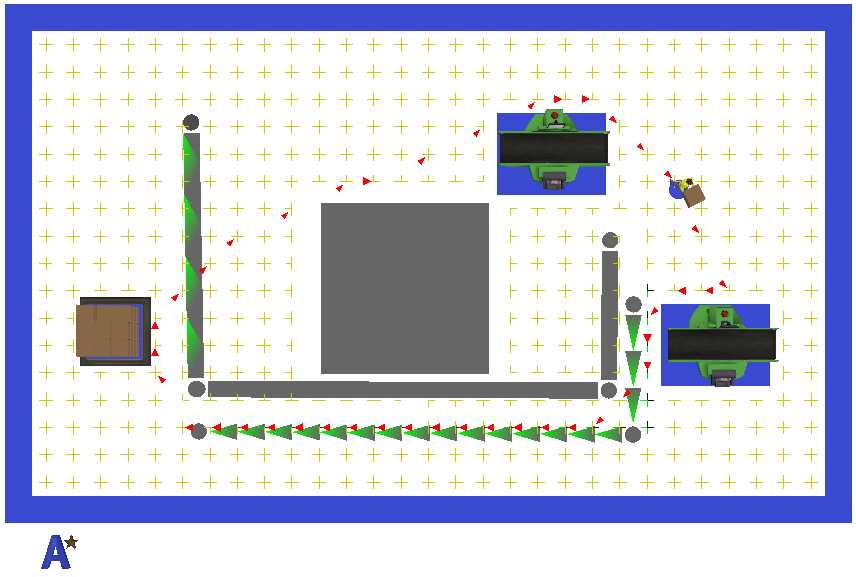
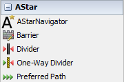
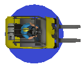
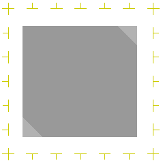
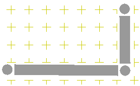
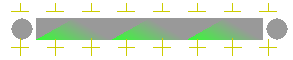
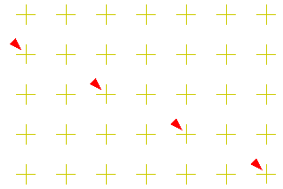
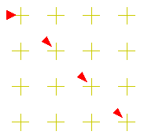
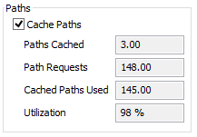

A Star, also known as A*, is a search algorithm used to find a path between points. As seen in the above image, the algorithm uses a grid of nodes that Task Executer objects (travel members) travel through. Each node specifies in which direction travel members can move. In the above images, the + lines represent these nodes. Each line points in the direction that can be travelled. The algorithm will look at nodes in the direction of travel and determine which direction is the fastest, including travelling diagonally between nodes. For more information see the Deep Search. The grid of nodes can be modified by creating Barriers restricting where the travel members can move or even influencing them to travel along certain paths.
A model may only contain one A* Navigator object, but it may have any number of barriers or members associated with it.
Visit Wikipedia for more information on how the algorithm works.
Note on performance: The A* algorithm requires more processing than a standard network node path. The search begins and the start node, then searches surrounding nodes toward the destination node. In a large model with many barriers, this search can cover a large amount of nodes. Performance can be improved through Cached Paths.
When the A* Module is loaded, the Library Icon Grid will display the following new objects:

Barriers can be created by single-clicking on the desired barrier, then clicking in the 3D view at the desired start and end points.

To connect TaskExecuter objects to the A* Navigator, hold down the 'A' key and click and drag from the A* Navigator object to the TaskExecuter object, or from the TaskExecuter object to the A* Navigator object. If the Draw Mode is set to Show Members, a blue circle will be drawn below the connected TaskExecuter objects.
If the Draw Mode is set to Show Traffic, red arrows will be draw along travel member paths. These paths decay (fade out) if they are not travelled upon. This allows you to see the most frequently travelled paths. If travel members are using the same paths frequently, it may be useful to Cache Paths. This will improve performance.
A list of members and their current state can be found on the A* Navigator's Properties Page.
Note on Travel Members: The AStar grid, or bounds, must cover the entire working area of Travel Members. This will help avoid issues that can occur when a Travel Member leaves the grid during offset travel.
There are 5 types of barriers used by the A* Navigator. These barriers modify the grid used in the search algorithm.
Note: Once barriers are created or modified, the model must be reset in order to recalculate the node table.

The simplest of barriers, the solid barrier modifies the grid to remove a rectangular area, preventing travel members from moving into the barrier.

Dividers disconnect nodes along their path, preventing travel members from crossing the divider. Dividers can be modified in the 3D view by dragging the end or middle points.
Any number of points may be added to a divider.

The one-way divider works very similarly to the divider, however, travel members are allowed to move through the divider in the direction of the green arrows, in this case, toward the top of the page. One-way dividers can be modified in the 3D view by dragging the end or middle points.
Any number of points may be added to a one-way divider.
Though the preferred path is not an actual barrier, it does function in the same way barriers do to modify the A* Navigator's node table. Instead of altering nodes by removing their directional indicators, the preferred path gives a greater weight to all of the nodes associated with the path. This Path Weight value can be changed through the A* Navigator's properties window. The path weight must be greater than 0 and less than 1 in order to function properly. Values above or below this can cause unintentional results. Preferred paths can be modified in the 3D view by dragging the end or middle points.
Preferred path's are one directional. Any number of points may be added to a preferred path.
FixedResource objects can be added to the A* Navigator as barriers. This can be down by holding the 'A' key down and clicking and dragging from the FixedResource object to the A* Navigator object, or by clicking on the A* Navigator object and dragging to the FixedResource object. If the Draw Mode is set to Show Members, a blue box will be drawn below the connected FixedResource objects.
Arbitrary rotations of FixedResrouce objects will not result in a rotated barrier. The barrier associated with a FixedResource object will rotate to the nearest 90 degrees.
Offset Travel - Since offset travel does not use a navigator to calculate where the TaskExecuter moves to, TaskExecuter's may enter a FixedResource's barrier. To disable this, open the TaskExecuter's properties window and change Travel offsets for load/unload tasks to Do not travel offsets for load/unload tasks.
Note: The blue box is drawn just above the bottom of the object, so some objects may not show depending on their 3D shape.
Deep search allows travel members to take more direct paths between nodes and 'cut corners'. By default Deep Search is on. Deep search will cause the algorithm to check nodes that are two places away from the start node rather than just one. Below is an example of a travel member's path while deep search is on:

Alternatively, with deep search off, the travel member can only move in 90 degree or 45 degree angles, as shown below:

A downside of using the deep search option is that it is more processor intensive. It will take longer to calculate paths between points. Speeds can be improved by Caching Paths.

Each time a travel request is made, the A* algorithm searches from the start node to find the most direct path to the end node. This is processor intensive and for large grids with frequent travel requests, can slow your model down. Caching paths can reduce processing time by reusing paths that have already been calculated rather than recalculated every time a travel request is made.
Paths Cached - The total number of unique paths that have been cached.
Path Requests - The total number of travel requests.
Cached Paths Used - The total number of travel requests that used a cached path.
Utilization - This is the calculated utilization of cached paths to path requests using the equation: CachedPathsUsed / PathRequests * 100.
Draw modes specify which elements of the A* Navigator will be drawn in the 3D view.
Show Barriers - Draws solid barriers, dividers, one-way dividers and preferred paths.
Show Bounds - Draws the A* Navigator's bounding box that contains all barriers and nodes. The width of the bounding box is equal to the A* Navigator's Node Spacing.
Show Grid - Draws the grid of nodes that can be travelled along by travel members. Note: Drawing the grid can drastically slow down your model if the grid is large.
Show Members - Draws circles under TaskExecuter objects and rectangles under FixedResource objects that are 'A' connected to the A* Navigator.
Show Traffic - Draws paths that have been recently travelled on by travel members. These paths will decay over time if they are not travelled on.